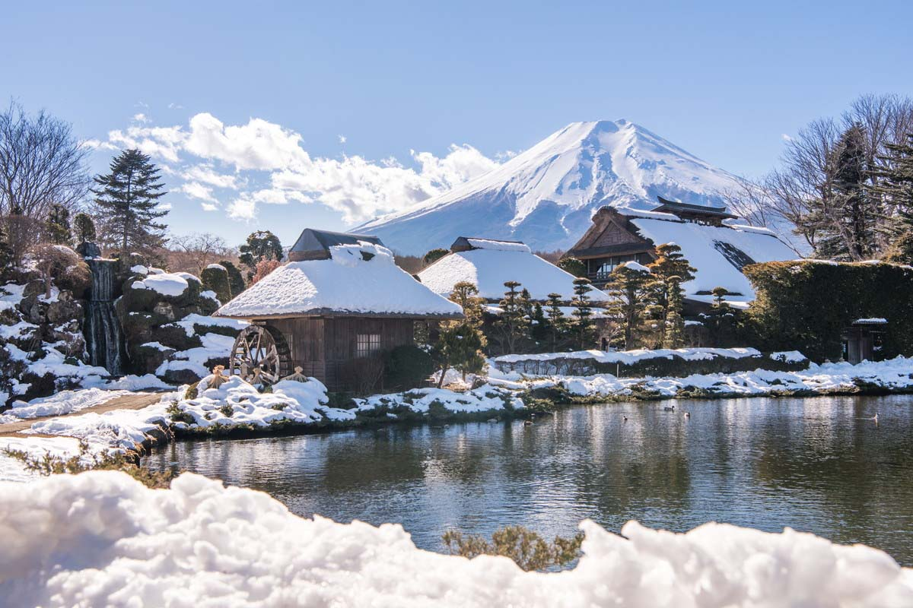
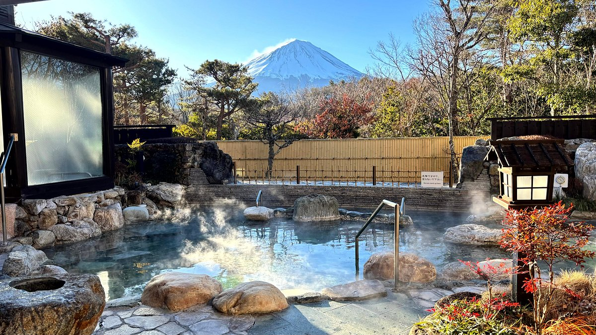

Uma viagem de um dia de Tóquio a Fujikawaguchiko oferece uma escapada perfeita para explorar as belezas naturais e culturais próximas à icônica montanha. Partindo de Tóquio pela manhã, a viagem de trem até Fujikawaguchiko é tranquila e cênica. Ao chegar, o Lago Kawaguchi é o principal destaque, com suas águas tranquilas oferecendo oportunidades para passeios de barco e caminhadas ao redor das margens, com vistas impressionantes do Monte Fuji ao fundo. Em seguida, uma visita ao Parque Arakurayama Sengen é indispensável; situado em uma colina, o parque proporciona uma das melhores vistas panorâmicas do Monte Fuji, especialmente com a icônica pagoda de cinco andares. Para uma dose de emoção, o Fuji-Q Highland oferece uma variedade de montanhas-russas e atrações radicais, além de vistas impressionantes do Monte Fuji a partir do parque.
 